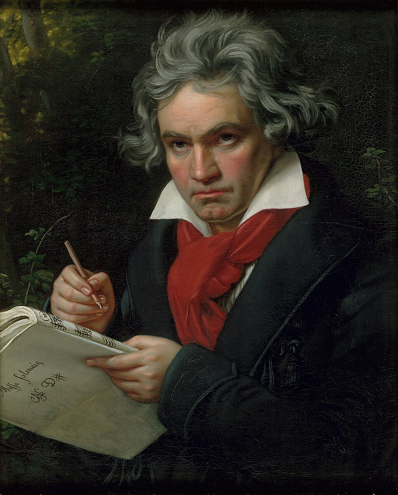
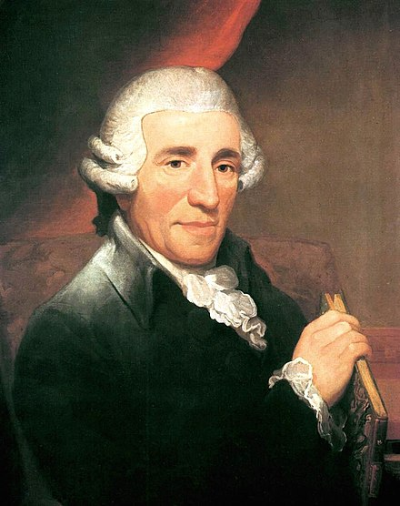

Ludwig van Beethoven
Beethoven was a prolific composer born December 1770. He composed many incredibly famous works, such as Fur Elise, Moonlight Sonata, and Ode to Joy. In the later years of Beethoven's life, he began to grow deaf. This posed a great struggle to his mental health and well being. Despite this, he still created many of his greatest works during this time.
Wolfgang Amadeus Mozart

Mozart was a talented musical genius that lived in Vienna, Austria, and was born on the 27th of January, 1756. The composer was a musical prodigy, already working with chords when he was only three years old, and composing at the age of five. Some of his most notable works include: Eine kleine Nachtmusik; Rondo, Alla Turca; and Twinkle, Twinkle, Little Star.
Joseph Haydn
Haydn was an ingenious classical composer, born on March 31st, 1732. He was not born from a rich family, and instead came from a modest upbringing. His education primarily came from being part ojf the choir of Saint Stephen’s Cathedral. Trumpet Concerto, the London Symphonies, and The Creation are some of Haydn’s most famous pieces. He continued to live a long life, dying from natural causes, 77 years old.